CL — Chile
**Chile: a limited, slow-burn spillover from a 200bp cut in US rates**
The main impact of a 200 basis-point (2.00 percentage-point) cut in United States interest rates on Chile is a modest positive spillover: GDP rises to about 0.05% above baseline by the 11th quarter. This is a small effect — Chile ranks seventh by absolute GDP response and sits in the "minimal" band — and it is slow to arrive, building gradually rather than landing as a sharp shock. The direction is intuitive: easier US monetary conditions loosen global financial conditions, and a small, open, commodity-linked economy like Chile picks up some of that through cheaper external financing and stronger external demand. But the magnitudes here are genuinely minor, and the profile is one of a gentle hump rather than a step change.
**Demand and trade.** Household consumption strengthens gradually, peaking around 0.02% above baseline near the 12th quarter and still slightly positive at Q20. Private investment is the more responsive domestic component, rising to roughly 0.17% above baseline by the ninth quarter before fading and turning negative late in the horizon. Net exports — the trade balance, since this model does not split imports from exports — move the other way, falling to about −0.06% of GDP at its trough in the eighth quarter. That is the classic pattern when a real appreciation erodes external competitiveness: domestic demand firms up while the trade balance softens. Government spending barely moves, dipping to about −0.005% around the tenth quarter and edging back toward zero, while government debt drifts up modestly to roughly 0.02% above baseline by the 17th quarter.
**External and FX.** The real exchange rate falls — that is, the home currency appreciates in real terms — reaching about −0.39% versus baseline in the eighth quarter. Remember the sign convention: a decrease in the real exchange rate is a real appreciation, not "currency strength" in the loose sense. This real appreciation is the mirror image of the net-exports deterioration described above: as Chilean goods become relatively more expensive, the trade balance weakens, and the two series trough together around Q8. The RER effect is the largest single transmission channel in this simulation, and it is what ties the external story to the trade-balance drag.
**Labour.** Employment improves slowly, peaking near 0.03% above baseline around the 15th quarter and remaining positive through Q20. Unemployment falls correspondingly, reaching about −0.016 percentage points at its lowest in the 13th quarter. Real wages, however, move the opposite way for most of the horizon: they decline to roughly −0.05% below baseline by the 11th quarter before recovering and turning positive late. So the labour market tightens on the quantity side while real pay is squeezed for a stretch — a pattern consistent with prices falling faster than nominal wages early on.
**Prices.** CPI inflation falls to about −0.026 percentage points at its trough in the second quarter, then swings positive from the tenth quarter onward. Summed over Q1–Q12, the cumulative CPI effect is −0.08 percentage points — a small disinflationary nudge, not a dramatic price-level shift. Domestic inflation follows a similar arc, troughing near −0.018 percentage points in the second quarter before turning positive. Firms' marginal cost rises gradually to about 0.03% above baseline by the 11th quarter, then fades back toward zero — a mild cost-pressure signal that arrives later than the inflation dip.
**Financial conditions.** The local policy rate eases initially, falling to about −0.047 percentage points at its low in the fifth quarter, before reversing and rising above baseline from the 12th quarter. Government bond prices rise to about 0.19% above baseline at their peak in the fifth quarter, consistent with lower discount rates early on, then fall below baseline from Q12. Yields tell a mixed story: the 2-year government yield dips to about −0.04 percentage points in the second quarter before turning positive; the 5-year yield rises modestly to about 0.015 percentage points by the 11th quarter; and the 10-year yield edges up to roughly 0.007 percentage points around the 12th quarter. Equity prices are the standout financial mover, peaking about 0.34% above baseline in the eighth quarter before fading and turning slightly negative late. House prices climb steadily to roughly 0.05% above baseline by the 15th quarter and stay positive. Bank credit supply barely budges — a peak of about 0.0005% — and the lending spread is flat at zero throughout, so credit conditions are essentially unchanged in this simulation.
**Sectoral and capital.** Manufacturing output is the most responsive production sector, rising to about 0.12% above baseline by the eighth quarter before gradually fading. Services output is far more muted, peaking near 0.03% around the 11th quarter. The capital stock accumulates slowly, reaching about 0.008% above baseline by the 16th quarter and holding there. Tobin's Q — the value of installed capital — rises to roughly 0.12% above baseline in the ninth quarter, then declines and turns negative late, tracking the investment cycle.
**Timing.** The GDP gain is largest in the 11th quarter, at about 0.05% above baseline. It has largely faded by Q19 and actually turns marginally negative at Q20, so the positive impulse is temporary rather than permanent. The equity boost peaks earlier, in Q8, and the RER and net-exports effects also crest around Q8, making the eighth quarter the point of maximum external and financial adjustment. By contrast, the labour-market and capital-stock responses peak later, in the mid-teens, reflecting their slower adjustment.
**Close.** These are model impulse responses relative to a no-shock baseline, not forecasts. They describe how Chile's economy would deviate from its baseline path under a 200bp US rate cut, holding everything else at the model's assumed settings. The headline is a limited, delayed, and ultimately self-reversing spillover — real appreciation and a softer trade balance offsetting much of the domestic demand gain.
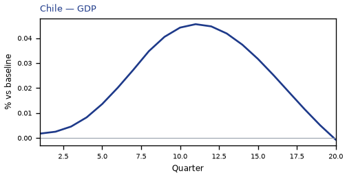
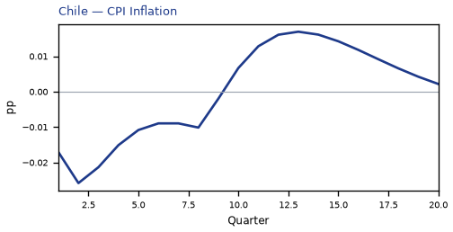
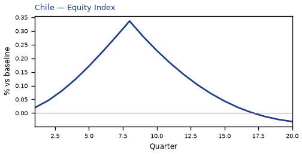
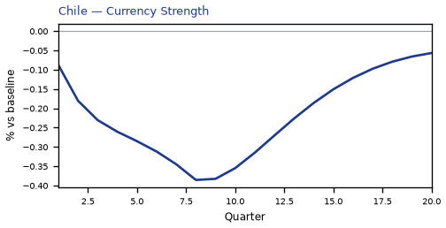
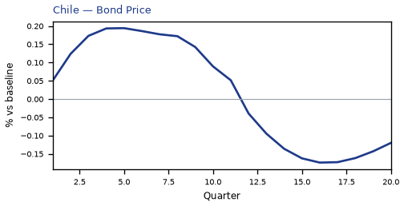
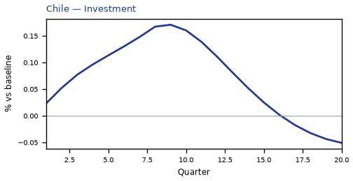
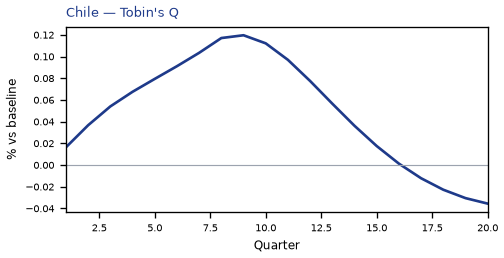
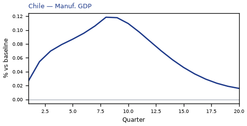
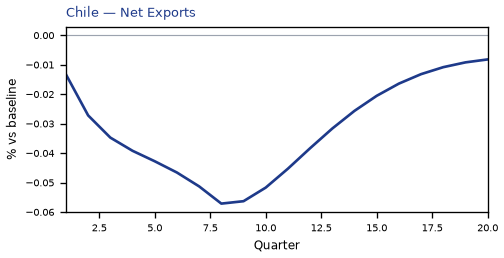
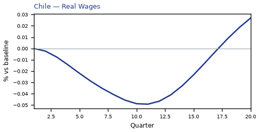
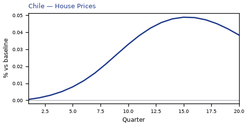

source=live · global_macro_v5 · contract v6 · Q1–Q20 JSON · not financial advice